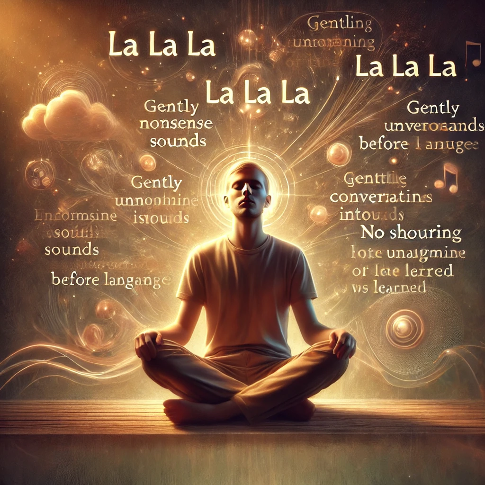

德瓦瓦尼冥想
在这个1小时的冥想中，一种温柔而陌生的语言通过冥想者流动并发声，使冥想者成为一个空的容器。这种冥想深深放松心灵并创造内在的宁静。如果在晚上最后一件事时进行，它还会带来深层的睡眠。
如何练习： 下载音频并按照以下步骤进行冥想。
第一阶段：15分钟
安静地坐着，聆听播放的音乐。

第二阶段：15分钟
开始发出无意义的声音，例如“啦啦啦”，并继续直到出现类似单词的陌生声音。这些声音需要来自于大脑中的一个不熟悉的部分，这部分在您学会单词之前作为儿童时曾被使用过。允许一种温柔的对话语调；不要哭泣、喊叫、大笑或尖叫。
第三阶段：15分钟
站起来并继续这种陌生的语言，让身体轻柔地随声音和谐运动。如果您的身体放松，细微的能量将会引导出拉蒂汉（一种自发、无结构的运动，超出您的控制）。
第四阶段：15分钟
躺下并保持静止。放下所有思绪，深度休息，吸收冥想期间产生的能量和宁静。